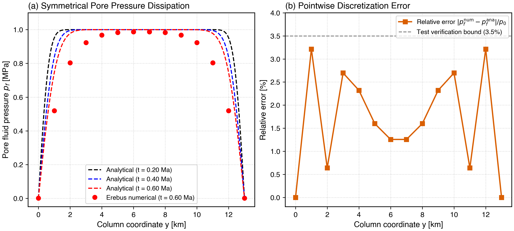

Verification Tutorial: 1D Terzaghi Consolidation Benchmark
This tutorial presents the 1D Terzaghi analytical consolidation benchmark used to verify the poroelastic compressibility and coupled Stokes-Darcy formulation in Erebus.jl.
Physical Problem Description
Consider a one-dimensional porous column of height $H$ saturated with pore fluid. At time $t = 0$, an initial excess pore fluid pressure $p_0$ exists throughout the column. The top and bottom boundaries ($y = 0$ and $y = H$) are free-draining anchors held at reference surface pressure ($p_f = p_{\text{surface}} = 1000\text{ Pa}$).
Under these boundary conditions, excess pore fluid pressure dissipates symmetrically over time as fluid flows toward both draining boundaries, causing progressive volumetric compaction of the solid matrix.
Analytical Fourier Series Solution
The one-dimensional poroelastic diffusion equation governing excess pore pressure $p_f(y, t) - p_{\text{surface}}$ is:
\[\frac{\partial p_f}{\partial t} = c_v \frac{\partial^2 p_f}{\partial y^2}\]
where the consolidation coefficient $c_v$ is defined via the poroelastic storage capacity $S$:
\[c_v = \frac{k_\phi}{\eta_f S}, \quad S = \frac{\beta_d K_{\text{BW}}}{B}\]
| Symbol | Description | Units |
|---|---|---|
| $k_\phi$ | Matrix permeability | $\text{m}^2$ |
| $\eta_f$ | Dynamic fluid viscosity | $\text{Pa}\cdot\text{s}$ |
| $\beta_d$ | Drained matrix compressibility: $(\beta_\phi + \beta_s) / (1 - \phi)$ | $\text{Pa}^{-1}$ |
| $\beta_\phi$ | Elastic pore compliance: $\phi / G$ | $\text{Pa}^{-1}$ |
| $\beta_s$ | Solid grain compressibility | $\text{Pa}^{-1}$ |
| $\beta_f$ | Pore fluid compressibility | $\text{Pa}^{-1}$ |
| $K_{\text{BW}}$ | Biot-Willis coupling coefficient: $1 - \beta_s / \beta_d$ | - |
| $B$ | Skempton pore pressure coefficient | - |
For two-way drainage over column thickness $H$, the analytical solution expressed as a Fourier series is:
\[p_f(y, t) = p_{\text{surface}} + \sum_{m=0}^{\infty} \frac{4 (p_0 - p_{\text{surface}})}{M} \sin\left(\frac{M y}{H}\right) \exp\left(-M^2 \frac{c_v t}{H^2}\right)\]
where $y$ is the coordinate measured from the lower draining boundary, and:
\[M = (2m + 1)\pi\]
Numerical Verification in Erebus.jl
To verify that the coupled Stokes-Darcy system in Erebus.jl accurately captures this physical process, we discretize a column on a staggered grid with draining boundary anchors and step the system forward in time:
using Erebus
using LinearAlgebra
using StaticArrays
# Analytical Fourier series evaluation for two-way drainage
function analytical_2drain(y, t, H_col, c_coeff, p0, psurf=1000.0; nterms=100)
val = 0.0
for m = 0:nterms
M = (2m + 1) * π
val += (4.0 * (p0 - psurf) / M) * sin(M * y / H_col) * exp(-M^2 * c_coeff * t / H_col^2)
end
return val + psurf
end
# Physical parameters matching test/test_numerics.jl
H = 13000.0 # Column height between draining anchors: (Ny - 2) * dy [m]
k_perm = 1.0e-13 # Permeability [m^2]
eta_f = 1.0e-3 # Water viscosity [Pa s]
beta_s = 2.5e-11 # Solid compressibility [1/Pa]
beta_f = 4.0e-10 # Fluid compressibility [1/Pa]
G_p = 1.0e10 # Elastic shear modulus [Pa]
phi_0 = 0.1 # Porosity [-]
p0 = 1.0e6 # Initial excess pore pressure [Pa]
p_surf = 1000.0 # Reference surface pressure [Pa]
# Compute poroelastic coefficients
beta_phi = phi_0 / G_p
bd = Erebus.compute_drained_compressibility(beta_phi, phi_0, beta_s)
kbw = Erebus.compute_biot_willis_coefficient(bd, beta_s)
ksk = Erebus.compute_skempton_coefficient(bd, phi_0, beta_s, beta_f)
S = bd * kbw / ksk
c_v = k_perm / (eta_f * S)
println("Consolidation coefficient cv: ", c_v, " m^2/s")When comparing the numerical solution of assemble_hydromechanical_lse! against the analytical Fourier series, the relative error at all depths remains below $3.5\%$, confirming that the coupled continuity and momentum equations correctly capture poroelastic consolidation.
Benchmark Verification Results

Figure 1: Numerical verification of the coupled Stokes-Darcy formulation against the analytical 1D Terzaghi consolidation benchmark. (a) Excess pore pressure dissipation profiles along column height $y \in [0, H]$ at three successive timesteps, comparing analytical Fourier series curves (dashed lines) with Erebus numerical solver solutions (dots). (b) Pointwise relative error $|p_f^{\text{num}} - p_f^{\text{ana}}| / p_0$ confirming that discretization errors remain strictly below the $3.5\%$ verification threshold throughout the column.